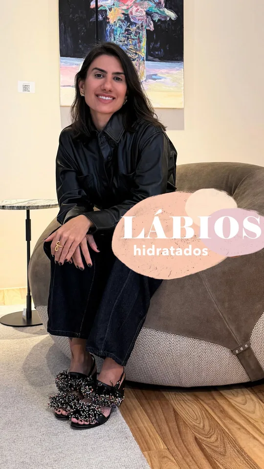

Dermatologia em Goiânia
Pele consciente.
Dermatologia em Goiânia para entender sua pele e levar o cuidado para a rotina.
Agendar consultaDra. Juliana Torminn
Juliana Torminn Campedelli é dermatologista em Goiânia e publica conteúdo sobre saúde da pele e cuidados diários no perfil Pele Consciente.
CRM-GO 17801 · RQE 13259

Carregar vídeoFechar vídeo
Dermatologia no dia a dia
- 01
Pele e rotina
Leve dúvidas sobre limpeza, proteção e os produtos que usa.
- 02
Manchas e oleosidade
Converse sobre o que mudou e sobre como isso afeta sua rotina.
- 03
Dermatologia estética
Conheça as perguntas para fazer sobre indicação, alternativas e acompanhamento.
Do dia a dia à consulta
- 01
Ponto de partida
Conte o que motivou a consulta e o que espera dela.
- 02
Avaliação
Revise hábitos, histórico e prioridades com a dermatologista.
- 03
Plano de cuidado
Alinhe recomendações e como acompanhar as mudanças.
Dê o primeiro passo.
Consulte as opções de agendamento no perfil de atendimento e confirme o endereço com a equipe.
Perguntas frequentes
Qual é o canal de agendamento?
O link abre o perfil público de agendamento indicado na bio profissional.
Preciso levar os produtos que uso?
Se preferir, leve fotos dos rótulos e anote quais você usa de manhã e à noite.
Onde encontro a clínica?
Consulte a ficha no Google Maps e confirme o local com o atendimento.